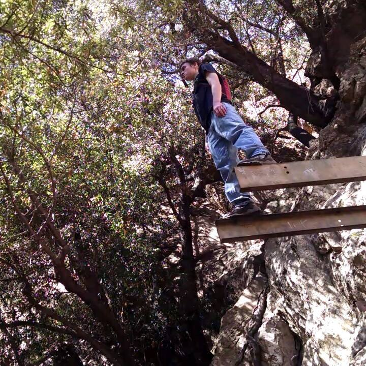
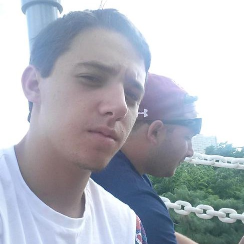
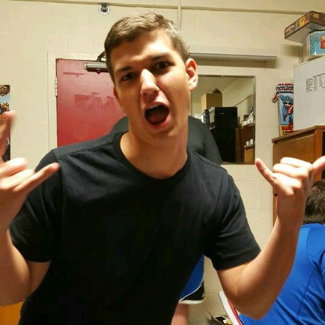
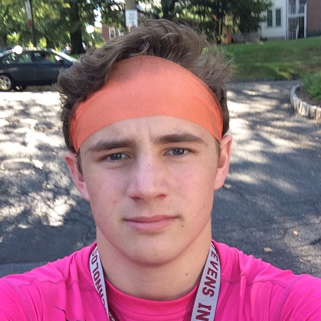

I am a Computer Science Major from Altadena,
California, studying at Stevens Institute of Technology in Hoboken,NJ.
I have prior experience with HTML5,JavaScript, Obj. C, C++, Python,
PHP 5, C# and Java. Also, I pledge my honor that I have abided by
the Stevens Honor System.

Nathaniel Blakely
“Men aren't really complicated, Ana, honey. They
are very simple, literal creatures. They usually mean what they say.
And we spend hours trying to analyze what they've said - when really
it's obvious. If I were you, I'd take him literally. That might help.”
― E.L. James, Fifty Shades of Grey

Nick Caccione
“I want you sore, baby,” he murmurs, and he
continues his sweet, leisurely torment, backward, forward. “Every time
you move tomorrow, I want you to be reminded that I’ve been here.
Only me. You are mine.” ― E.L. James, Fifty Shades of Grey

Mark Knapp
“Sometimes I wonder if there's something wrong with me.
Perhaps I've spent too long in the company of my literary romantic heroes,
and consequently my ideals and expectations are far too high.”
― E.L. James, Fifty Shades of Grey
Khayyam Saleem
“His head turns fractionally toward me, his eyes
darkest slate. I bite my lip.
“Oh, f*ck the paperwork,” he growls. He lunges at me, pushing me
against the wall of the elevator. Before I know it, he’s got both of
my hands in one of his in a vice-like grip above my head, and he’s
pinning me to the wall using his hips. Holy sh*t. His other hand grabs
my ponytail and yanks down, bringing my face up, and his lips are on
mine. It’s only just not painful. I moan into his mouth, giving his
tongue an opening. He takes full advantage, his tongue expertly
exploring my mouth. I have never been kissed like this.”
― E.L. James, Fifty Shades of Grey

Kevin Zarzana